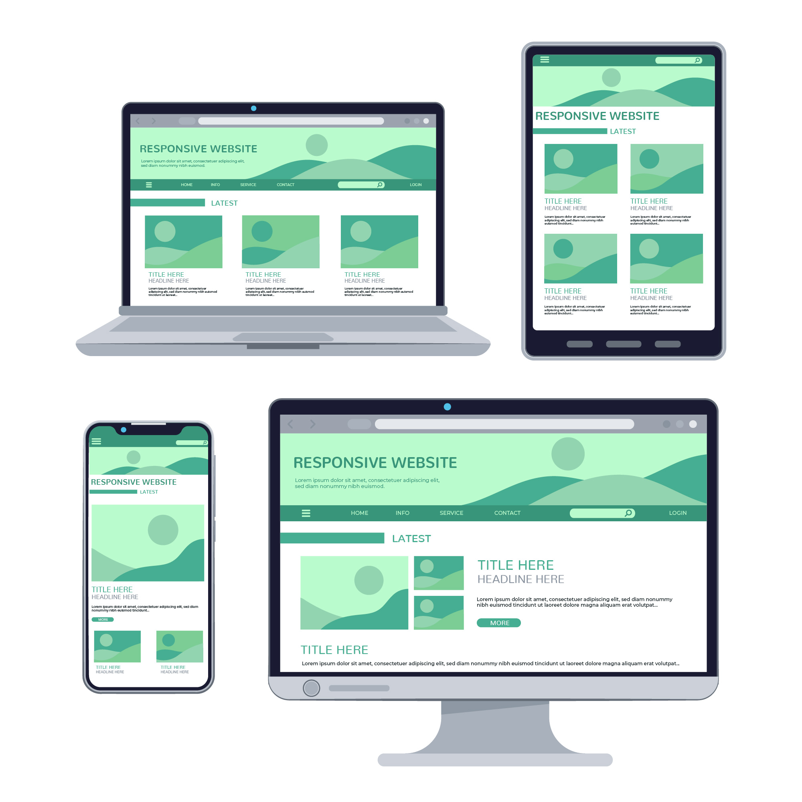

On this website we will talk about the many different features that are crucial for your website to look presentable and attract users so they actually access your content. These allow for better overrall user experience so that everyone who visits your website has a positive experience even if they did not find the information they needed.
Usability
Web site usability refers to how user friendly a website is according to its user interface and if the intended target audience is actually able to use and navigate through the website. A usuable website allows users to accomplish the tasks they need to do when they visit the page, is easy for new visitors to learn and understand, and is memorable so past users who have no visited in a while can still remember how to use it efficiently. Website usability also includes ways to prevent and correct user errors and even if the user did not actually find the information they needed, they still found the website experince pleasant.

Consistency
A consistent website means that while all the pages on that website will not be the exact same, they should follow the same structure and flow throughout the website so that the user still knows they are on the same website. Colour themes, fonts, navigation menus, headers and footers should all follow similar design elements which in turn will help with usability and learnability. You should have a set tone/theme for your website that follows through all the way with elements and content.
Navigation
Website navigation refers to how users will click through your website to navigate and find what they need. Without proper navigation websites will look very unorganised and unstructured meaning users will stay on your website for much less time. Navigation means users will spend less time trying to learn your website because they will know how to navigate through your website immediately and find what they need to find. Navigation tools allow or sites to be broken down easily and ensure your website is accessible and usable.
White Space
Also known as negative space, white space is the empty space around the content on your web page. This helps balance the design of the page and the organisation of the conent which improves the visual experience for the user. This unmarked area can be around images, logo, texts and when used correctly can bring out these elements even more.
Site Layout
This refers to the actual layout of your website and how all the elements in that webpage are arranged. This will be the overall structure of your webpage and how you organise the content to better improve user experience. How your content will be grouped and presented depends on your site layout.
Alignment
In web design, the alignment of your elements will indicate how elements such as text, images and buttons are positioned in a presentable way. This will be the orientation of paragraphs how any graphics on the page will line up so that your page does not look cluttered and unfinished.
Clarity
This is an important component of web design that measures how easy your website is to navigate and understand. For your webpage to not look cluttered it is best to keep it simple and easy to nagivate so that the information is clear and easy to find. Having uneven texts, fonts and colors makes it incredibly hard for users to find the information they need on your website.
Simplicity
Simplicity means that you are making it easy for users to understand and use your website by removing unecessary elements so that your website looks clean with a clear layout. A webpage that includes too many elements and information even if it looks good can be too overwhelming and as a result makes users leave the webpage faster.
Accuracy
This ensures that your webpage contains factual and accurate information that can always be verified. Information should be spell checked and have correct grammar throughout so that users can actually rely on your website for the information that is being distributed. It is wise to always have an editor or a fact checker who ensures information is up to date and accurate.
Accessability
Accessability focuses on allowing everyone to have access to a websites information including people with visual or hearing impairments. This also enables many times of assistive technology to have access to your website to aid those with disabilities and accomadate to all types of users who need the information. An example is having the alt text on image source that helps anyone using devices on your website. This can also include letting users change font size and multiple types of navigation options so all users have equal access to web page content.